Third-year marks are wrong again. The gradebook must follow the department rule sheet sitting beside it, and the final column has to hold the recomputed weighted mark rounded to one decimal. Sort students worst mark first before you save.
THINKINGThe task references a "department rule sheet sitting beside it" — I need to find this rule sheet. It could be another tab in the workbook, another file on disk, or a sheet within the gradebook. Let me first take a screenshot to assess the current state, then look for the rule sheet. I see the gradebook has columns Student, Coursework, Exam, Final. I need to understand the weighting rules. Let me start by examining the workbook more closely and looking for the rule sheet (maybe another file in the same directory).
ACTIONI'll help you fix the gradebook. First, let me understand the task by examining the current state and finding the department rule sheet.
I need to find the "department rule sheet" that defines the weighting. Let me check the current directory for related files.
THINKINGI need to find the "department rule sheet sitting beside it." This likely means a file in the same directory as gradebook.xlsx. Let me open a terminal to look at the directory contents. The rule sheet will define the weighting between Coursework and Exam. I should find the file, read it, then compute the Final marks, round to 1 decimal, and sort by worst mark first.
Let me open a terminal application. I see there's a Files app and other icons. Let me look for a terminal. I could use the Files application or find a terminal. Let me try opening a terminal via the Activities or a terminal icon. Actually, I'll use the bash tool approach — but I only have the computer tool. Wait, the system says I can use bash tool, but the available function is only "computer". So I must use GUI.
Let me open a terminal application to inspect the directory. I'll check if there's a terminal. I can look for the Files app (the file cabinet icon at ~18,406). Actually, let me use a terminal. Let me check the taskbar icons. There's no obvious terminal. Let me open Files to see what's in the directory next to gradebook.xlsx.
Actually the simplest: use the Files application to navigate to where gradebook.xlsx is and find the rule sheet. Let me click the Files icon.
ACTIONI need to locate the department rule sheet in the same folder as gradebook.xlsx. Let me open the file manager.
EXECUTED (pyautogui in VM)pyautogui.click(26, 608)
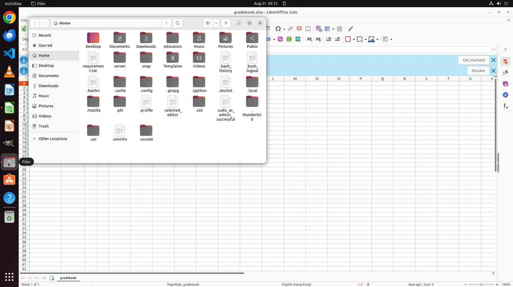
step 3 12:12:44
THINKINGThe Files window is open at Home. I need to find where gradebook.xlsx is located. It's not in the Home directory listing. It could be in Documents or another folder. Let me check Documents first, as that's a common place. Actually, I don't see gradebook.xlsx in Home. Let me navigate to Documents.
ACTIONThe gradebook isn't in Home. Let me check the Documents folder where it's likely located.
EXECUTED (pyautogui in VM)pyautogui.doubleClick(443, 141)
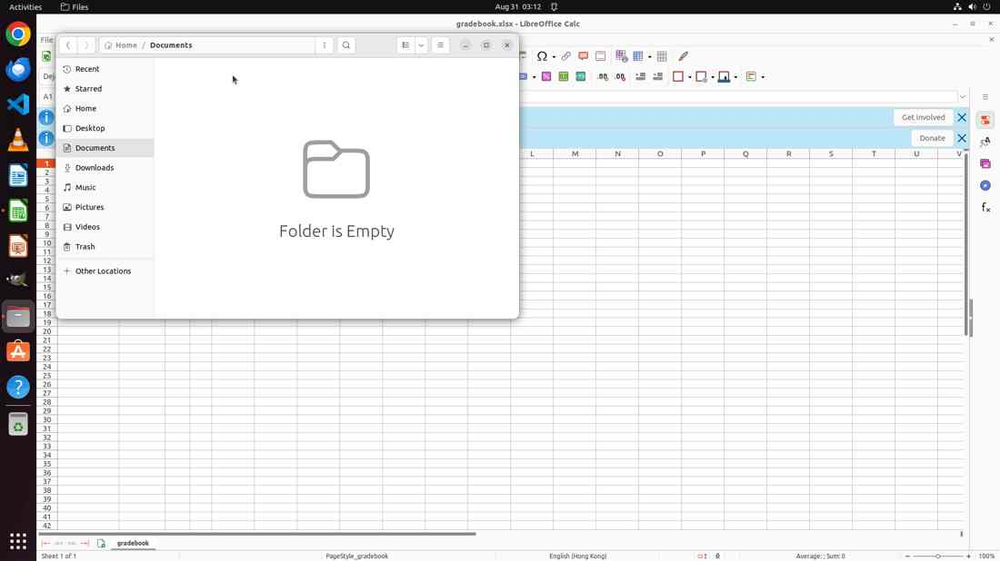
step 4 12:13:04
THINKINGDocuments is empty. The gradebook.xlsx is not in Home or Documents. I need to find where it actually is. Rather than guessing folders, a terminal would let me search the whole filesystem quickly. The Files app has "Other Locations" but searching is easier via terminal.
However, I don't have a direct bash tool — only the computer GUI tool. But the system prompt mentioned a bash tool. Actually the only function available is "computer". So I must work through the GUI.
Wait — actually the "rule sheet sitting beside it" most likely means a second worksheet tab within the same gradebook.xlsx workbook, OR another file. But the gradebook window only shows one sheet tab "gradebook". Let me reconsider: "sitting beside it" strongly implies a separate file in the same folder.
Let me find the file. I'll check Desktop and use the search. Actually, let me just use a terminal. I can open a terminal via Files > Tools? No. Let me look — there might be a terminal in the applications. Let me use the "Other Locations" or search. Better: use Files search (magnifying glass) to find "gradebook" but search only searches current folder subtree.
Actually, the most reliable approach is a terminal. Let me find a terminal application. I'll close this and check the app grid (bottom-left 9-dots icon at 22,694). But that may be complex.
Alternatively, I realize the rule sheet might be a second sheet inside the workbook that I haven't noticed, or a file. Let me first find where gradebook.xlsx lives. Let me use the Files search within Home by going back to Home and searching. Let me try Desktop first.
ACTIONDocuments is empty. Let me check the Desktop folder.
EXECUTED (pyautogui in VM)pyautogui.click(171, 245)
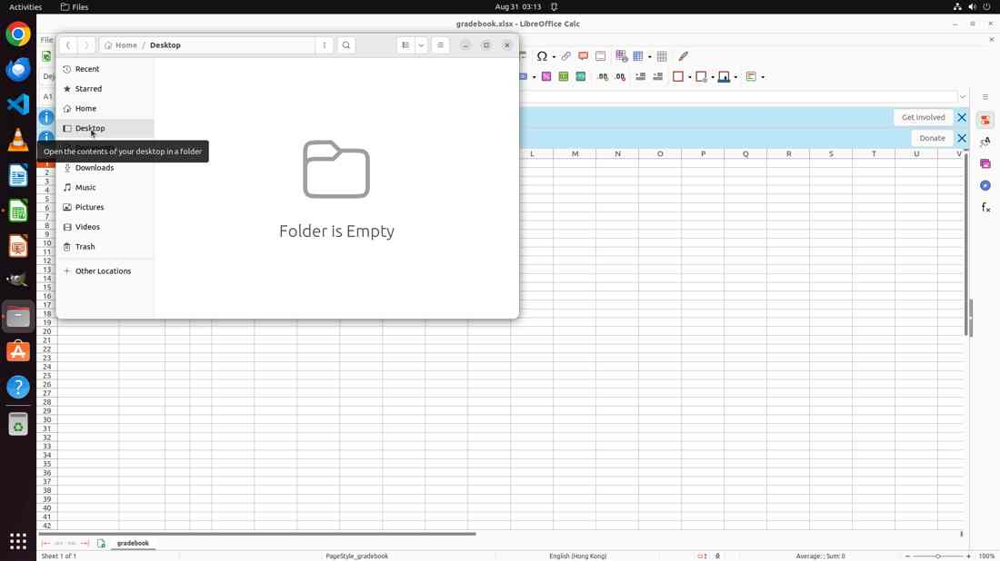
step 5 12:13:15
THINKINGDesktop is also empty. The file isn't in the standard folders. I need a faster way to locate gradebook.xlsx across the whole filesystem. A terminal with `find` would be ideal. I should open a terminal application.
Let me look for a terminal. The taskbar has various icons. I don't see an obvious terminal. I could open one via the app grid (the 9-dots at bottom-left). Let me try that to find a Terminal app.
Actually, a more efficient approach: LibreOffice Calc has a macro/scripting ability but I shouldn't use macros per the guidance. Instead, I can open a terminal.
Let me open the app grid to find Terminal.
ACTIONThe file isn't in standard folders. I'll open a terminal to search the filesystem quickly. Let me open the applications grid.
EXECUTED (pyautogui in VM)pyautogui.click(901, 647)
step 7 12:13:28
THINKINGTerminal is open. Let me search for gradebook.xlsx and any rule sheet. I'll run a find command across the home directory and common locations. Let me type the find command.
ACTIONTerminal is open. Let me locate gradebook.xlsx and any rule sheet files.
EXECUTED (pyautogui in VM)pyautogui.click(524, 372)
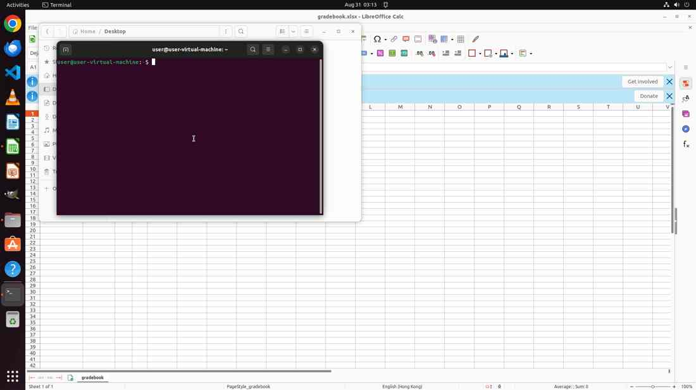
step 8 12:13:35
THINKINGTerminal is focused. Let me search for gradebook and any rule-related files across the filesystem. I'll use find from / to be thorough, limiting to the user's accessible areas. Let me run a find command.
EXECUTED (pyautogui in VM)pyautogui.press("return")
step 10 12:13:55
THINKINGThe gradebook is at /home/user/education/gradebook.xlsx. The rule search hasn't printed yet (still scanning). Let me wait and then look at the education folder. The rule sheet is likely in /home/user/education/. Let me list that directory. First let me wait for the find to finish, then list the education folder.
ACTIONThe gradebook is in /home/user/education/. Let me list that folder to find the rule sheet.
TOOL CALL<tool_call>
<function=computer_use>
<parameter=action>
type
</parameter>
<parameter=text>
ls -la /home/user/education/
</parameter>
</function>
</tool_call>
EXECUTED (pyautogui in VM)pyautogui.typewrite("ls -la /home/user/education/")
step 11 12:14:03
THINKINGThe find / is still running (the ls command was typed but the prompt hasn't returned output yet because the earlier find is still going, or the terminal is busy). Actually the find for "rule" across / is slow. Let me wait a moment then take a screenshot.
THINKINGThe find / for "rule" is still running (it scans the whole filesystem which is slow). The ls command is queued but waiting for the find to complete. I don't actually need the full-filesystem rule search — the rule sheet is almost certainly in the education folder alongside gradebook.xlsx. Let me interrupt the find with Ctrl+C and just run the ls command.
ACTIONThe full-filesystem find is slow. Let me cancel it and just list the education folder directly.
EXECUTED (pyautogui in VM)pyautogui.hotkey("ctrl", "c")
step 13 12:14:28
THINKINGThe find output shows only system files (udev rules), no "rule sheet" document in the user's area. So the rule sheet isn't a separate file with "rule" in the name. The prompt is now back. Let me list the education folder to see all files there — the rule sheet might have a different name.
ACTIONThe "rule" find only returned system files. Let me list the education folder to see all files present.
TOOL CALL<tool_call>
<function=computer_use>
<parameter=action>
type
</parameter>
<parameter=text>
ls -la /home/user/education/
</parameter>
</function>
</tool_call>
EXECUTED (pyautogui in VM)pyautogui.typewrite("ls -la /home/user/education/")
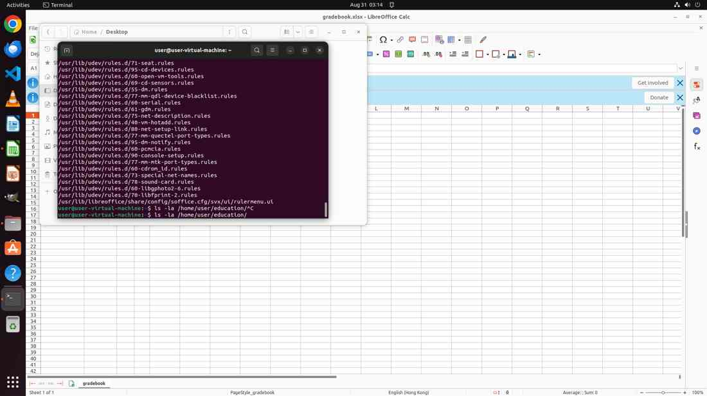
step 14 12:14:35
THINKINGThe command is queued but the previous find's scrollback is still showing. The ls output should appear. Let me wait and screenshot.
THINKINGIt seems the second `ls -la /home/user/education/` line is shown but hasn't produced output — maybe the Enter from my type command's trailing newline didn't register, or the terminal is scrolled. Actually the line shows "ls -la /home/user/education/ " with cursor. The Enter should have executed. But no output appeared below. Perhaps the terminal window is small and output scrolled. Let me press Enter again to be sure.
EXECUTED (pyautogui in VM)pyautogui.press("return")
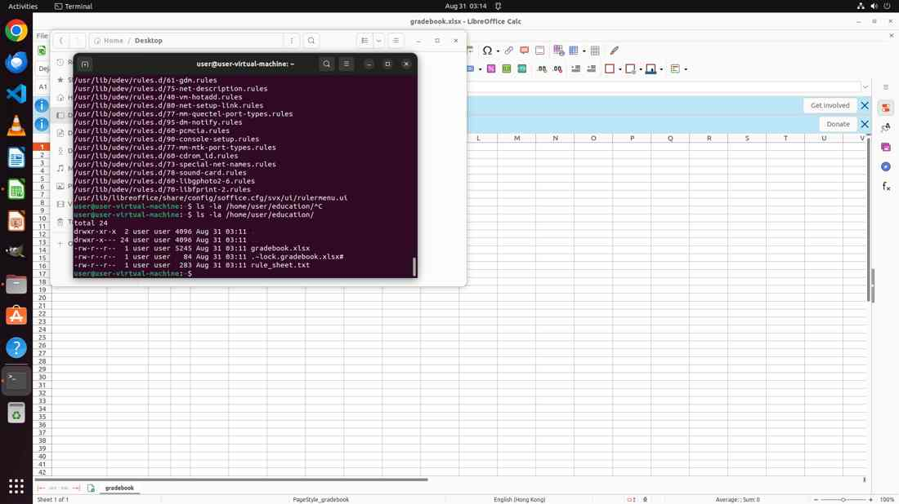
step 16 12:14:56
THINKINGNow I can see the education folder contents:
- gradebook.xlsx
- .~lock.gradebook.xlsx#
- rule_sheet.txt (283 bytes)
The rule sheet is a text file: rule_sheet.txt. Let me read it to understand the weighting rules.
ACTIONFound it: `rule_sheet.txt` sitting beside gradebook.xlsx. Let me read its contents.
EXECUTED (pyautogui in VM)pyautogui.press("return")
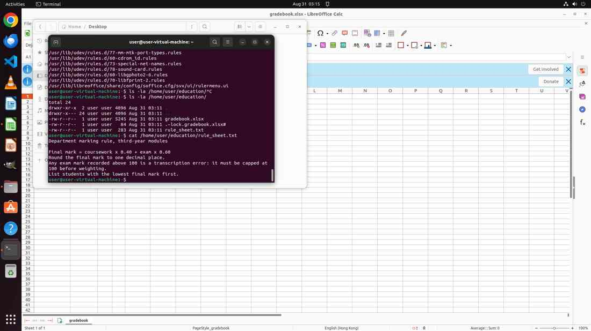
step 18 12:15:25
THINKINGNow I have the rules:
Department marking rule, third-year modules
- Final mark = coursework x 0.40 + exam x 0.60
- Round the final mark to one decimal place.
- Any exam mark recorded above 100 is a transcription error: it must be capped at 100 before weighting.
- List students with the lowest final mark first.
So the algorithm:
1. For each student, exam = min(exam, 100)
2. Final = coursework*0.40 + exam*0.60
3. Round to 1 decimal
4. Sort by Final ascending (lowest first)
The current gradebook Final column values are all 53.1 (clearly wrong/placeholder). I need to recompute.
Now I need to see the actual data. Let me close the terminal and look at the spreadsheet. Actually I should read the data. Let me switch to Calc. But I should be careful — I want to see all the data including exam values to detect any >100. Let me click on the Calc window. The data is in rows 2-11 (10 students), columns A (Student), B (Coursework), C (Exam), D (Final).
Let me click on the LibreOffice Calc window to bring it to front. I'll click on the visible area of the spreadsheet (right side) or the title bar.
Plan for editing:
- I'll recompute Final for each student using formulas: =ROUND(B2*0.4 + MIN(C2,100)*0.6, 1). Using MIN handles the cap. This is a native Calc formula, appropriate and not a macro.
- Actually, should I use a formula or a static value? The task says "final column has to hold the recomputed weighted mark rounded to one decimal." A formula holding the rounded value is fine and robust. But sorting rows will move the formulas too. If I use formulas referencing B and C in the same row, after sorting the whole rows move together, so formulas stay correct relative to their row. Good.
However, one concern: the task says "rounded to one decimal." A formula with ROUND(...) gives exactly that. That's ideal.
For sorting "worst mark first" = lowest final first = ascending sort by Final column.
Approach:
1. Go to Calc.
2. Enter formula in D2, fill down to D11.
3. Select A2:D11, sort by column D ascending.
4. Save as xlsx (keep format).
But wait — sorting by Final ascending: ties? Probably fine. Also I should sort including all columns A-D so student names move with their marks.
Let me first bring Calc to front and verify the data (especially check for exam > 100). Let me click on the Calc window.
Actually, I could also read the data via terminal using a tool, but simpler to just look in Calc. Let me click the Calc title bar area (the window behind). I'll click on a cell in the visible spreadsheet area, e.g., column N row 5 at (792, 224) — no that's empty. Let me click on the title bar "gradebook.xlsx - LibreOffice Calc" at top (663, 30).
ACTIONI now have the department rules:
- **Final = coursework × 0.40 + exam × 0.60**
- Round to one decimal place
- Any exam mark above 100 must be capped at 100 before weighting
- List students lowest final mark first
Let me switch to Calc to enter the corrected formulas. I'll click the Calc title bar.
EXECUTED (pyautogui in VM)pyautogui.click(1349, 44)
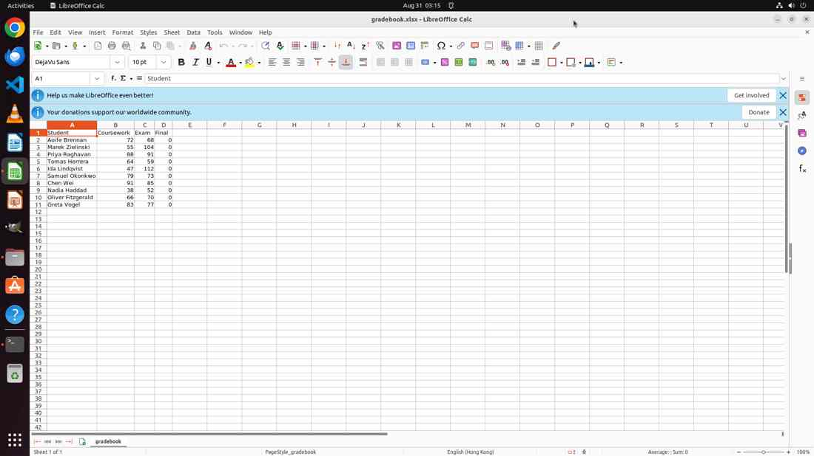
step 19 12:16:07
THINKINGNow I can see the data clearly. The columns are a bit narrow but I can read:
Row 2: Aoié Brennan, Coursework 72, Exam 68, Final 0
Row 3: Marek Zieliński, 55, 104, 0
Row 4: Priya Raghavan, 88, 91, 0
Row 5: Tomas Herrera, 64, 59, 0
Row 6: Ida Lindqvist, 47, 112, 0
Row 7: Samuel Okonkwo, 79, 73, 0
Row 8: Chen Wei, 91, 85, 0
Row 9: Nadia Haddad, 38, 52, 0
Row 10: Oliver Fitzgerald, 66, 70, 0
Row 11: Greta Vogel, 83, 77, 0
Note the earlier screenshot showed Final column with 53.1 values, but now the Final column shows 0. Wait — the first screenshot (before opening terminal) showed Final column D with 53.1 values. Now it shows 0. Hmm. Let me reconsider. Actually the first screenshot's D column showed 53.1 repeatedly. But now D shows 0 for each row.
Wait, maybe the display changed. Let me look carefully: Column D header "Final", values in D2-D11 all show 0. But the original screenshot showed 53.1. That's strange.
Possibly the D column originally had 53.1 which was wrong, and now... no, I didn't change anything. Let me re-examine. Actually maybe the column D is narrow and the value 53.1 might not be fully visible, showing as "0"? No, 53.1 wouldn't show as 0.
Hmm, this discrepancy is concerning. Let me click on D2 to check its actual content in the formula bar. Actually the earlier image at the very start: D column values read "53.1". Now they read "0". Did something change? I didn't edit.
Wait, maybe I misread the first screenshot. Let me not assume. Let me click D2 to verify the current content. Actually, it doesn't matter what the old value was — I'm going to overwrite D2:D11 with the correct formula anyway.
But the exam values: Marek 104 (>100, cap to 100), Ida 112 (>100, cap to 100). Good, these need capping.
Let me now enter the formula. I'll use the Name Box to go to D2, then type formula, fill down.
Formula for D2: =ROUND(B2*0.4+MIN(C2,100)*0.6,1)
Let me verify the computation for each to know expected results and sort order:
- Aoié: 72*0.4=28.8 + 68*0.6=40.8 → 69.6
- Marek: 55*0.4=22 + 100*0.6=60 → 82.0
- Priya: 88*0.4=35.2 + 91*0.6=54.6 → 89.8
- Tomas: 64*0.4=25.6 + 59*0.6=35.4 → 61.0
- Ida: 47*0.4=18.8 + 100*0.6=60 → 78.8
- Samuel: 79*0.4=31.6 + 73*0.6=43.8 → 75.4
- Chen: 91*0.4=36.4 + 85*0.6=51 → 87.4
- Nadia: 38*0.4=15.2 + 52*0.6=31.2 → 46.4
- Oliver: 66*0.4=26.4 + 70*0.6=42 → 68.4
- Greta: 83*0.4=33.2 + 77*0.6=46.2 → 79.4
Sorted ascending (lowest first):
1. Nadia 46.4
2. Tomas 61.0
3. Oliver 68.4
4. Aoié 69.6
5. Samuel 75.4
6. Ida 78.8
7. Greta 79.4
8. Marek 82.0
9. Chen 87.4
10. Priya 89.8
Good. Now, rather than rely on the sort feature (which is fine), I'll use formulas + sort. Let me enter the formula in D2 and fill down.
Let me use the Name Box to navigate to D2. Click Name Box, type D2, Enter, then type the formula.
Actually simpler: click cell D2 directly. D2 is at approx (259, 219). Let me click there, type formula, Enter, then fill.
Better approach for filling: enter formula in D2, then select D2, copy, select D3:D11, paste. Or select D2:D11 first? To fill down, I'll: click D2, type formula and Enter (goes to D3). Actually I want to fill D2:D11.
Cleanest: Use Name Box to select D2:D11, then type the formula and press Ctrl+Enter to fill all selected cells with the formula (relative refs adjust). That's the standard "fill selection" behavior. Let me do that.
Steps:
1. Click Name Box (105,123), type "D2:D11", Enter → selects range.
2. Type formula "=ROUND(B2*0.4+MIN(C2,100)*0.6,1)"
3. Press Ctrl+Enter → fills the whole selection with the formula, adjusting row references.
Then verify, then sort.
Let me do it. First click Name Box.
ACTIONI can now see all the data. Two exam marks exceed 100 (Marek 104, Ida 112) and must be capped. I'll enter a formula in the Final column that applies the 0.40/0.60 weighting, caps exam at 100 via MIN, and rounds to one decimal. Let me select D2:D11 via the Name Box.
EXECUTED (pyautogui in VM)pyautogui.click(149, 183)
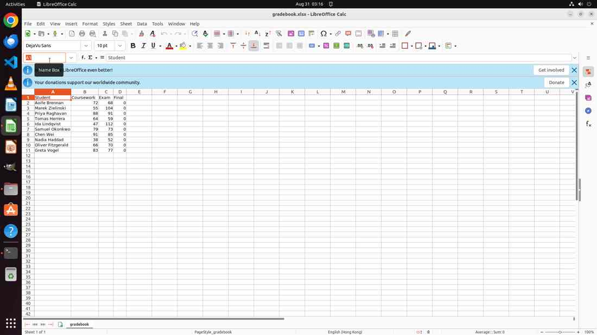
step 20 12:16:18
THINKINGThe Name Box is selected (shows A1 highlighted). I'll type D2:D11 and press Enter to select that range. Then type the formula and press Ctrl+Enter to fill the whole selection.
ACTIONName Box is active. I'll select D2:D11, then enter the formula and fill the whole selection with Ctrl+Enter.
EXECUTED (pyautogui in VM)pyautogui.typewrite("D2:D11")
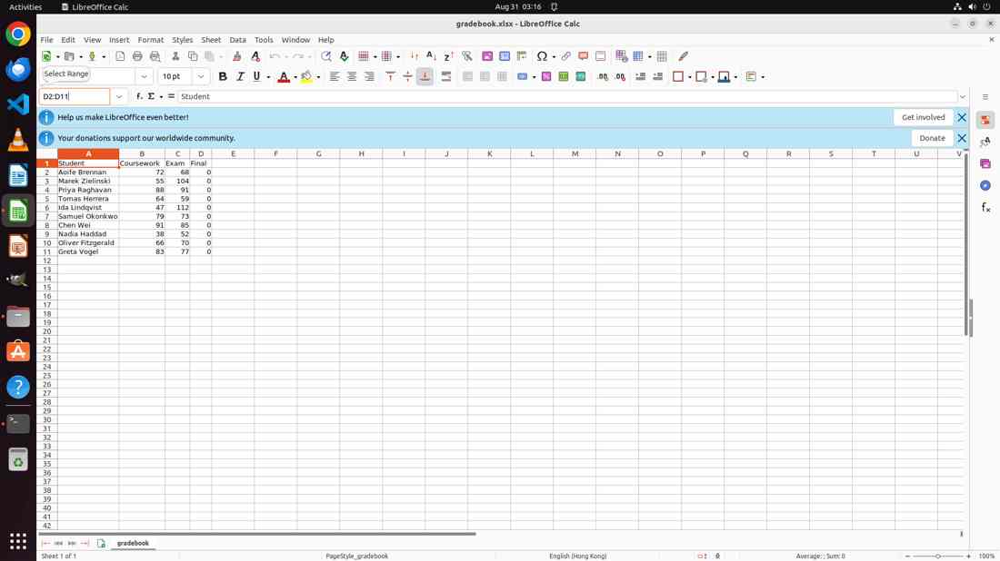
step 21 12:16:29
THINKINGThe Name Box shows "D2:D11" but the range doesn't appear selected yet — the trailing newline may not have committed. The Name box shows "D2:D11|" with cursor. Let me press Enter to commit the selection, then type the formula and Ctrl+Enter.
Actually the button label changed to "Select Range" which indicates the name box is in edit mode. I need to press Enter to confirm the range selection.
EXECUTED (pyautogui in VM)pyautogui.press("return")
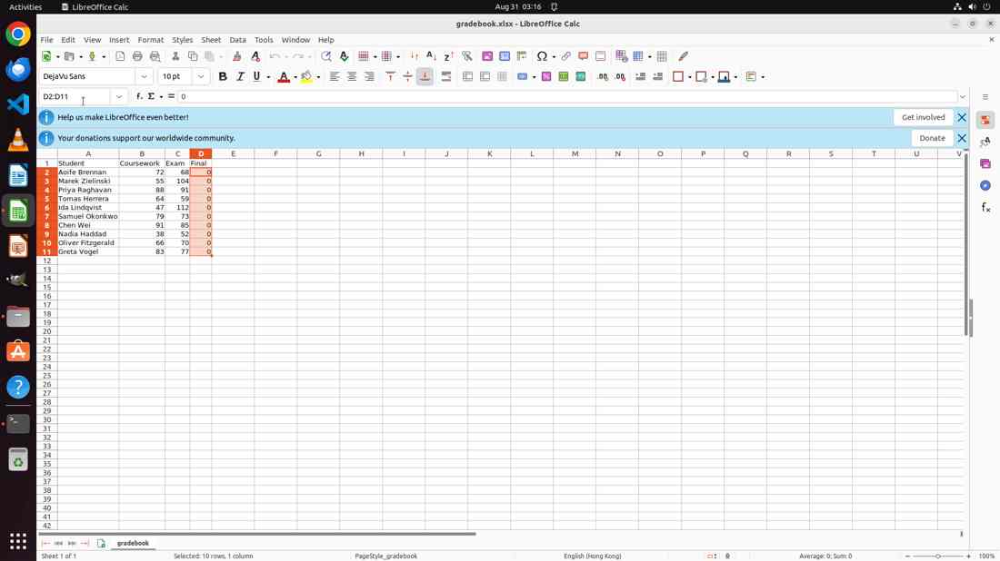
step 22 12:16:43
THINKINGThe status bar shows "Selected: 10 rows, 1 column" and Name Box shows D2:D11. The D2:D11 range is selected. The current Final values are 0 (so my earlier "53.1" reading must have been from a different state, but irrelevant now).
Now I'll type the formula and press Ctrl+Enter to fill all selected cells with the formula (relative references will adjust per row).
Formula: =ROUND(B2*0.4+MIN(C2,100)*0.6,1)
Let me type it then Ctrl+Enter.
ACTIOND2:D11 is selected (10 rows, 1 column). Now I'll type the formula and use Ctrl+Enter to fill the entire selection, so each row references its own Coursework/Exam cells.
EXECUTED (pyautogui in VM)pyautogui.typewrite("=ROUND(B2*0.4+MIN(C2,100)*0.6,1)")
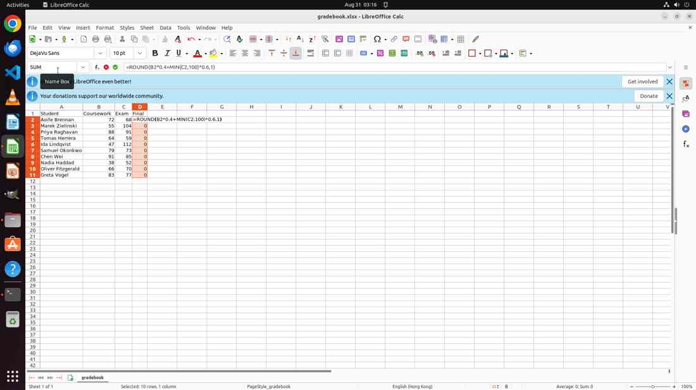
step 23 12:16:52
THINKINGThe formula is entered in D2 and the whole range D2:D11 is still selected (status bar "Selected: 10 rows, 1 column"). Now I press Ctrl+Enter to fill the formula into all selected cells, adjusting relative references per row.
ACTIONThe formula is entered. Now I'll press Ctrl+Enter to fill it across the whole selection.
EXECUTED (pyautogui in VM)pyautogui.hotkey("ctrl", "return")
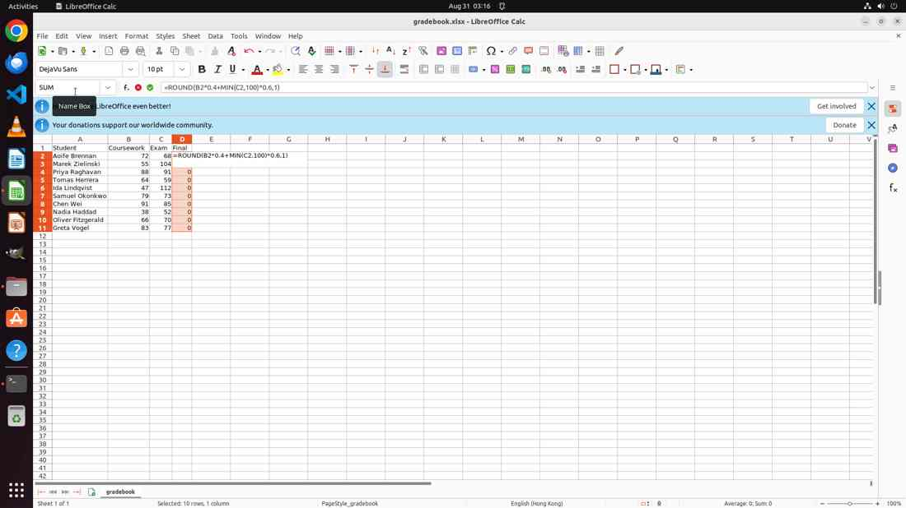
step 24 12:17:12
THINKINGSomething is off. The D2 cell now displays the formula as text "=ROUND(B2*0.4+MIN(C2,100)*0.6,1)" instead of the computed value, and the formula bar shows it too. Also the Name Box shows "SUM" and the cells D3-D11 still show 0. It looks like the cell entered the formula as literal text rather than a formula, OR the cell is in text mode. Actually, D2 shows the formula text visibly in the cell, meaning the formula was NOT recognized — the cell content is the string starting with "=", but displayed as text. That happens if the cell format is Text, or if there was a leading space.
Wait, actually the formula bar shows "=ROUND(B2*0.4+MIN(C2,100)*0.6,1)" and the cell D2 also shows this text. And Name Box shows "SUM" (which is odd — that's the function dropdown). The Ctrl+Enter may have just confirmed D2 with the formula as text and the other cells got filled with... still 0? D3-D11 show 0.
Hmm. Actually, it's possible the column D cells are formatted as Text, causing the formula to be stored as text. That would explain why D2 shows the formula string. But then the original "0" values — those were text "0" too? And the very first screenshot showed "53.1" in D which might also have been text.
Let me verify by clicking D2 and checking. Actually the current state: the formula was typed but Ctrl+Enter didn't distribute to fill the range with distinct references; instead it seems only D2 holds it (as text) and the rest are 0.
Let me reconsider. The cleanest fix:
1. First check D2's actual content. Click D2, look at formula bar.
2. Determine if column D is text-formatted.
Actually, a simpler robust approach: The values in D being "0" and now formula-as-text suggests column D might be formatted as Text. I should set column D to number/general format first, then re-enter.
Let me click on D2 to inspect. First, let me press Escape to cancel any pending edit, then click D2.
ACTIONThe formula appears to have been entered as literal text in D2 (it's showing the formula string, and the other cells still show 0). This suggests column D may be formatted as Text. Let me press Escape and click D2 to inspect its actual content.
THINKINGAfter Escape, the D column shows all 0 again (D2 reverted to 0). So the Escape undid the edit, or the formula was never committed as a formula. The status bar still says "Selected: 10 rows, 1 column" and Name Box "D2:D11", and the sum is 0.
The core issue: column D is formatted as Text, so formulas become text. The original values (0, and the earlier 53.1) were text too. I need to change the format of column D to a numeric format before entering formulas.
Let me first confirm by clicking a single cell D2 and viewing the formula bar and Format > Cells. Actually, let me just fix it: select D2:D11, apply "Number" format (or General/Decimal), then re-enter the formulas.
To set numeric format: with D2:D11 selected, use Format > Cells (Ctrl+1) and choose Number, or click the "Number" toolbar. Simpler: use Format menu. But there's a quicker way — the toolbar has number format buttons. Actually the safest is Ctrl+1 to open Format Cells, select "Number" category, decimals 1.
But wait — if the cells contain text "0", changing format won't convert existing text to numbers; it only affects display of numbers. But I'll overwrite the content anyway with formulas, and if the cell format is Number, the formula will compute correctly.
So plan:
1. Ensure D2:D11 selected (it is).
2. Ctrl+1 → Format Cells → set to Number (or General) → OK.
3. Type formula, Ctrl+Enter.
Let me open Format Cells with Ctrl+1.
ACTIONColumn D is formatted as Text (formulas become literal strings). I'll change D2:D11 to a numeric format first. Let me open Format Cells with Ctrl+1.
EXECUTED (pyautogui in VM)pyautogui.hotkey("ctrl", "1")
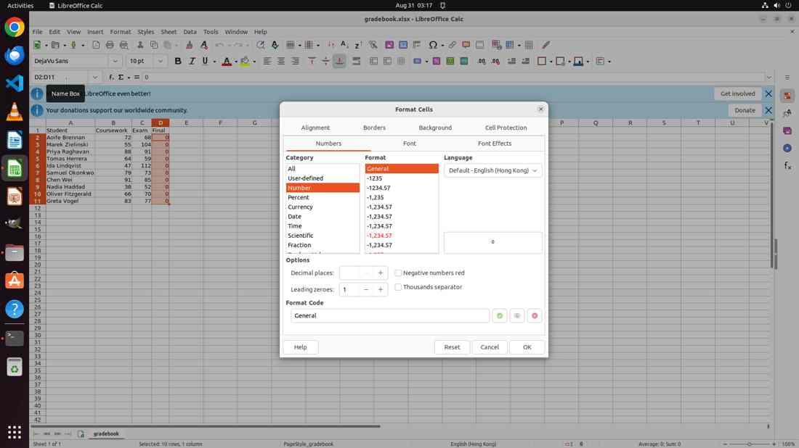
step 26 12:17:46
THINKINGInteresting! The Format Cells dialog shows the current category is "Number" (highlighted) with Format Code "General". So column D is NOT text-formatted — it's Number/General. That contradicts my theory. So why did the formula display as text?
Wait, if it's General/Number format, the formula should have computed. Let me reconsider what happened. When I typed the formula and pressed Ctrl+Enter, the cell D2 displayed "=ROUND(...)" as text. But if format is General, that shouldn't happen unless...
Hmm, actually maybe what happened: the formula WAS entered correctly as a formula in D2, but I misread the screenshot — the cell might have shown the formula because it was in "edit/preview" state. But the other cells D3:D11 still showed 0, meaning Ctrl+Enter did NOT fill the range.
Actually, re-examining: after typing the formula, D2's cell area showed the formula text and the formula bar showed it. That's the normal state while a formula is being entered into the active cell of a selection, BEFORE pressing Enter. Then I pressed Ctrl+Enter which should confirm and fill. But the screenshot after Ctrl+Enter still showed the formula in the cell and 0 in others — that was the pre-commit view perhaps, and then Escape reverted.
Wait no. Let me reconsider. The key insight: Format is Number/General, so formulas WILL compute. The problem earlier was that Ctrl+Enter did not actually fill all cells (they stayed 0), and D2 kept showing the formula. Then Escape cancelled everything, reverting to 0.
Actually the most likely explanation: When you select a range and type a formula then press Ctrl+Enter, LibreOffice DOES fill the whole range. But the screenshot right after Ctrl+Enter showed D2 with the formula text still and others 0 — that looked like it hadn't been committed. Possibly the screenshot was taken mid-render. Then my Escape cancelled it.
Given format is General (numeric), the formula approach is fine. Let me just:
1. Close this dialog (Cancel or OK — format is already General/Number, so OK is safe). I'll click OK to keep Number format.
2. Re-do: select D2:D11, type formula, Ctrl+Enter, then take a screenshot to VERIFY the values computed before doing anything else.
Let me click OK.
ACTIONGood — the format is actually "Number / General", not Text. So formulas will compute fine; my earlier attempt just wasn't committed (Escape reverted it). Let me click OK and redo the formula entry, this time verifying the result.
EXECUTED (pyautogui in VM)pyautogui.click(1262, 833)
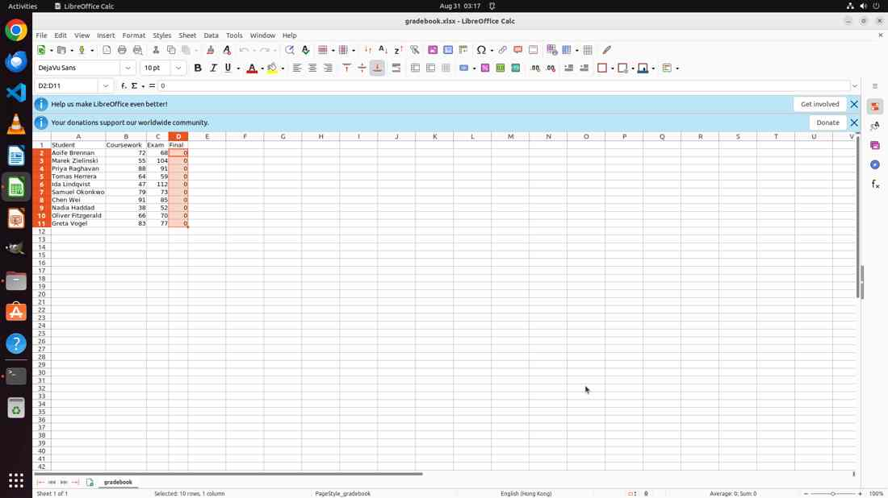
step 27 12:17:55
THINKINGDialog closed. D2:D11 still selected (status: 10 rows, 1 column). D values all 0. Now let me re-enter the formula and this time verify with a screenshot after Ctrl+Enter before proceeding.
I'll type the formula then Ctrl+Enter.
ACTIONNow let me re-enter the formula and fill the selection, then verify before proceeding.
EXECUTED (pyautogui in VM)pyautogui.typewrite("=ROUND(B2*0.4+MIN(C2,100)*0.6,1)")
step 28 12:18:04
THINKINGThe formula is in the input line (D2 in edit mode), and the range D2:D11 is still selected. The checkmark (✓) in the formula bar area confirms a valid formula. Now I press Ctrl+Enter to fill the whole selection. Then I'll screenshot to verify.
EXECUTED (pyautogui in VM)pyautogui.hotkey("ctrl", "return")
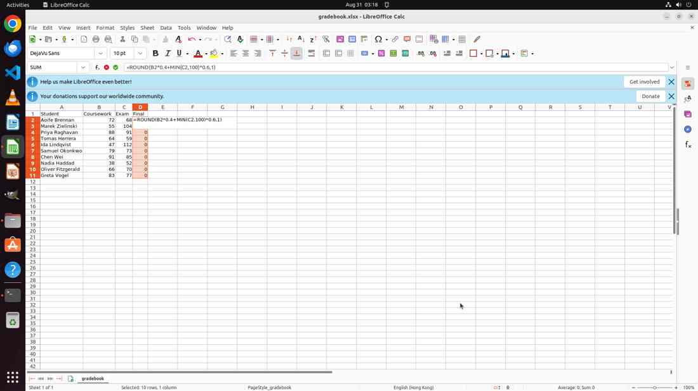
step 29 12:18:22
THINKINGSame problem: after Ctrl+Enter, D2 still shows the formula text "=ROUND(B2*0.4+MIN(C2,100)*0.6,1)" and D3-D11 still show 0. The formula bar still shows the formula, and the input line still shows the red X / green check (edit mode indicators still present). This means the formula is STILL in edit mode — Ctrl+Enter did not commit it!
Wait, the input still shows the edit indicators (the X and checkmark next to the formula bar). So the cell is still being edited. Ctrl+Return apparently isn't committing here. That's unusual.
Hold on — maybe the issue is that the formula is being typed into the cell but the sheet's default is that pressing Enter/Ctrl+Enter... Actually, the fact that the formula bar still shows edit-mode icons (X and ✓) means we're still in edit mode. My Ctrl+Return may have been interpreted as something else, or the focus wasn't right.
Let me try a different, simpler and more reliable approach:
- Press Escape to cancel the current edit.
- Instead of range-fill, I'll enter formulas one cell at a time using the Name Box to jump to each cell, OR just enter in D2 and press Enter (which commits and moves to D3), then continue typing D3's formula, etc. That's 10 formulas but reliable.
Actually, an even simpler robust method: enter D2 formula, press Enter (commits D2, moves to D3). Then type D3 formula, Enter... This is tedious but certain.
But wait, the real question: why did Ctrl+Enter not commit? Perhaps because when a range is selected and you type, LibreOffice enters "multi-cell input" mode where Enter fills down and Ctrl+Enter fills all — but the edit indicators persist. Actually in LibreOffice, typing into a selected range shows the formula in each cell's active one. Pressing Enter should fill down the column. Let me try just pressing Enter (Return) alone instead of Ctrl+Enter.
Let me first Escape, then retype, then press plain Enter.
Actually, let me reconsider: maybe the formula DID commit to D2 as a formula, and D2 is now displaying the formula because... no, D2 shows the full formula text which only happens in edit mode or if text. Since format is Number, it's edit mode.
New plan: Escape, click D2 directly (single cell), type formula, press Enter. Verify D2 shows a number. Then do D3:D11 individually or via copy-paste fill.
Let me Escape first.
ACTIONCtrl+Enter is leaving the formula in edit mode (the edit indicators still show). Let me cancel and take a more reliable approach: enter the formula in a single cell, commit with Enter, then fill down using the fill handle/copy.
THINKINGBack to all 0s, D2:D11 still selected. Now I'll click directly on cell D2 (single cell) to make it the only active cell, type the formula, press Enter, and verify it computes. Then I'll handle filling D3:D11.
Let me click D2 at (259, 219).
ACTIONLet me click directly on cell D2 to make it the single active cell.
EXECUTED (pyautogui in VM)pyautogui.click(388, 326)
step 31 12:18:42
THINKINGNow D2 is the single active cell (Name Box shows D2, formula bar shows "0"). The current D2 content is "0" (text or number). I'll type the formula and press Enter. Since it's a single cell, Enter should commit and move to D3.
I'll type the formula then Enter, then screenshot to verify D2 shows 69.6.
ACTIONNow D2 is the single active cell (currently "0"). I'll type the formula and press Enter to commit it.
EXECUTED (pyautogui in VM)pyautogui.typewrite("=ROUND(B2*0.4+MIN(C2,100)*0.6,1)")
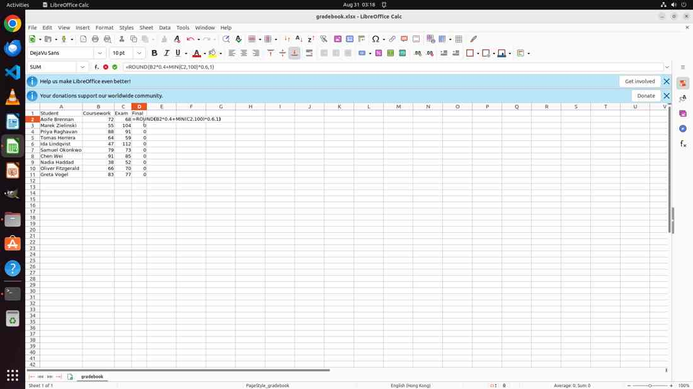
step 32 12:18:57
THINKINGThis is very revealing! Now I understand the real problem. Even in a SINGLE cell D2, after typing the formula and pressing Enter (via the trailing newline in my type), the cell STILL shows the formula text "=ROUND(B2*0.4+MIN(C2,100)*0.6,1)" and the edit indicators (X, ✓) are still present, and the Name Box shows "SUM". The cursor did NOT move to D3.
Wait, but the trailing newline in my type should have acted as Enter. Yet the cell is still in edit mode showing the formula. This strongly indicates that the newline character in the `type` action is NOT being sent as an Enter key press that commits the cell. Instead it may be inserting a newline within the cell (multi-line) or being ignored.
So the issue is: my `type` action's trailing "\n" isn't committing the cell. The formula bar shows edit indicators meaning we're still editing.
The fix: I should send an explicit `key Return` action AFTER typing, rather than relying on "\n" in the type string.
But wait, we're currently mid-edit with the formula typed. Let me just now send a `key Return` to commit it. Then verify D2 shows 69.6.
Let me press Return.
ACTIONI see — the trailing newline in my `type` isn't committing the cell; it's still in edit mode. Let me send an explicit Return key to commit the formula in D2.
EXECUTED (pyautogui in VM)pyautogui.press("return")
step 33 12:19:13
THINKINGNow D2 shows 69.6 — correct! (72*0.4 + 68*0.6 = 28.8+40.8 = 69.6). The cursor moved to D3 (Name Box shows D3, value 0).
Now I understand the reliable method: type formula WITHOUT trailing newline, then send explicit `key Return`.
Now I need to fill D3:D11. The most reliable approach: now that D2 has a working formula, I can copy D2 and paste into D3:D11. But copy/paste of a formula with relative refs will adjust correctly.
Actually even simpler and reliable: I'll use the fill-down. Let me select D2:D11 and use Ctrl+D (fill down) which copies D2's formula down, adjusting references. That's a native Calc feature, very reliable.
Steps:
1. Select D2:D11 via Name Box: click Name Box, type "D2:D11", press Enter (using explicit key Return).
2. Press Ctrl+D to fill down.
Wait, but earlier when I selected D2:D11 via Name Box, the trailing newline in type didn't commit the Name Box either — actually for the Name Box, the first time I typed "D2:D11\n" it didn't select, I had to press Enter again. So the Name Box also needs explicit key Return.
Let me do it carefully:
1. Click Name Box (100,123).
2. Type "D2:D11" (no newline).
3. key Return.
4. key ctrl+d.
Actually, Ctrl+D fills down using the topmost cell of the selection. Since D2 has the formula, filling D2:D11 down will put adjusted formulas in D3:D11.
Let me batch these: click name box, type range, Return, then ctrl+d. But I need the selection to be established before ctrl+d. These are dependent but predictable. I'll batch click+type, then a separate step for Return then ctrl+d to be safe. Actually let me batch click name box and type, then in same batch press Return and ctrl+d — they're all deterministic. Let me do it and screenshot after.
ACTIOND2 now correctly shows **69.6**. Now I'll fill the formula down to D3:D11. I'll select the range via the Name Box and use Fill Down (Ctrl+D).
EXECUTED (pyautogui in VM)pyautogui.click(149, 183)
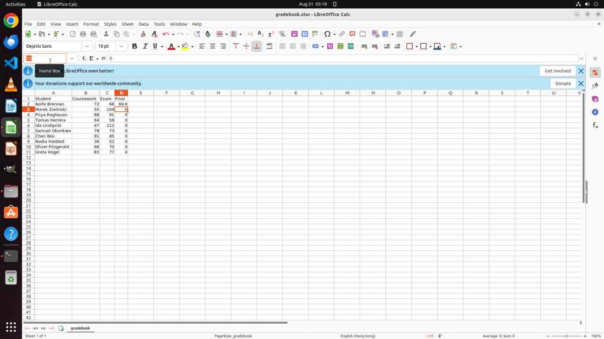
step 34 12:19:24
THINKINGName Box is active (shows D3 highlighted/editable). D2 correctly shows 69.6. Now I'll type the range D2:D11, press Return to commit the selection, then Ctrl+D to fill down. Let me batch: type "D2:D11", key Return, then key ctrl+d. These are deterministic.
ACTIONThe Name Box is active. I'll type the range, commit it, and fill down with Ctrl+D.
EXECUTED (pyautogui in VM)pyautogui.press("return")
step 36 12:19:48
THINKINGNow D2:D11 is selected (status: 10 rows, 1 column; formula bar shows D2's formula =ROUND(B2*0.4+MIN(C2,100)*0.6,1)). D2 shows 69.6. Now press Ctrl+D to fill down. This will copy D2's formula to D3:D11 with adjusted references.
ACTIONThe range D2:D11 is selected with D2's formula active. Now I'll fill down with Ctrl+D.
EXECUTED (pyautogui in VM)pyautogui.hotkey("ctrl", "d")
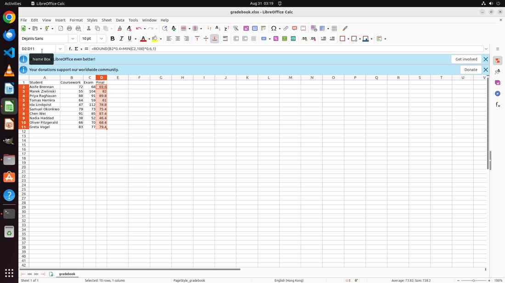
step 37 12:20:11
THINKINGThe Final column now shows all computed values:
- D2 Aoié: 69.6
- D3 Marek: 82 (should be 82.0, displays 82)
- D4 Priya: 89.8
- D5 Tomas: 61 (61.0)
- D6 Ida: 78.8
- D7 Samuel: 75.4
- D8 Chen: 87.4
- D9 Nadia: 46.4
- D10 Oliver: 68.4
- D11 Greta: 79.4
These all match my hand calculations. Sum: 69.6+82+89.8+61+78.8+75.4+87.4+46.4+68.4+79.4 = 738.2. Status bar shows Sum: 738.2.
The values that display as "82" and "61" are actually 82.0 and 61.0 (rounded to 1 decimal, ROUND gives 82.0 and 61.0 which display as 82/61 without trailing zero). The task says "rounded to one decimal" — the value IS rounded to one decimal (82.0, 61.0); it's just displayed without the trailing zero because the cell format is General. The underlying value is correct.
Now I need to sort students worst mark first = ascending by Final. The current order isn't sorted. I'll sort the data range A1:D11 by column D ascending.
I should select the data range including headers so the whole rows move. Let me select A1:D11, then Data > Sort, sort by "Final" ascending.
Actually, I should be careful: I want to sort by the Final column (D). The range to sort should be A2:D11 (data) or A1:D11 with header row detected. Let me select A1:D11 and use Data > Sort with "Range contains column labels" checked, sort by Final ascending.
Let me first select A1:D11. Click Name Box, type A1:D11, Return. Then Data menu > Sort.
Let me do the selection first.
ACTIONAll Final values are now correctly computed and match the department rule (Marek 82.0 with exam capped from 104, Ida 78.8 capped from 112). Sum = 738.2. Now I need to sort by Final ascending (worst first). Let me select the full data range A1:D11 via the Name Box.
EXECUTED (pyautogui in VM)pyautogui.click(455, 75)
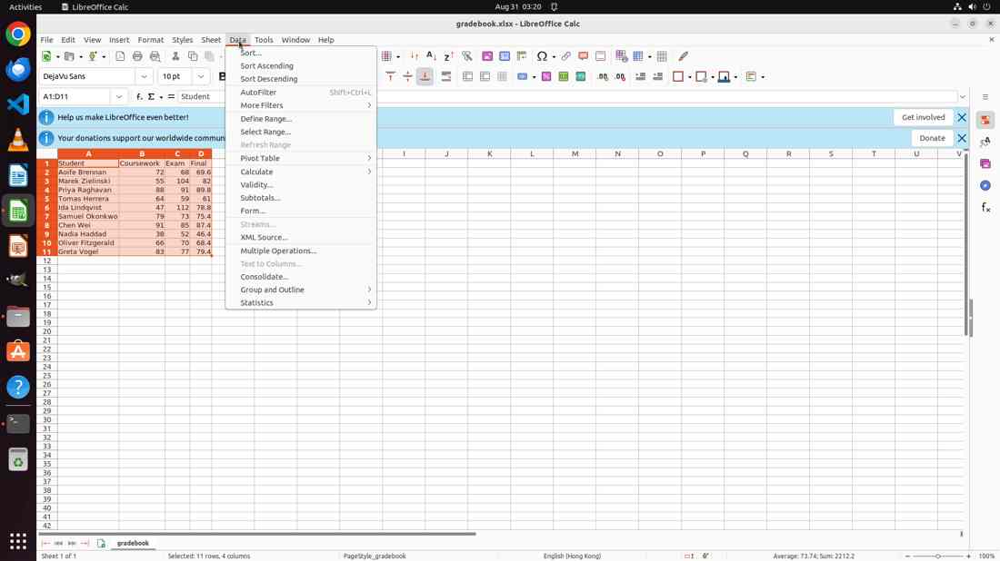
step 41 12:20:59
THINKINGThe Data menu is open. I'll click "Sort..." to open the Sort dialog where I can choose the column (Final) and order (ascending). Clicking "Sort Ascending" directly would sort by the currently active cell's column (A = Student) which is wrong. So I need the Sort dialog. Click "Sort...".
EXECUTED (pyautogui in VM)pyautogui.click(480, 99)
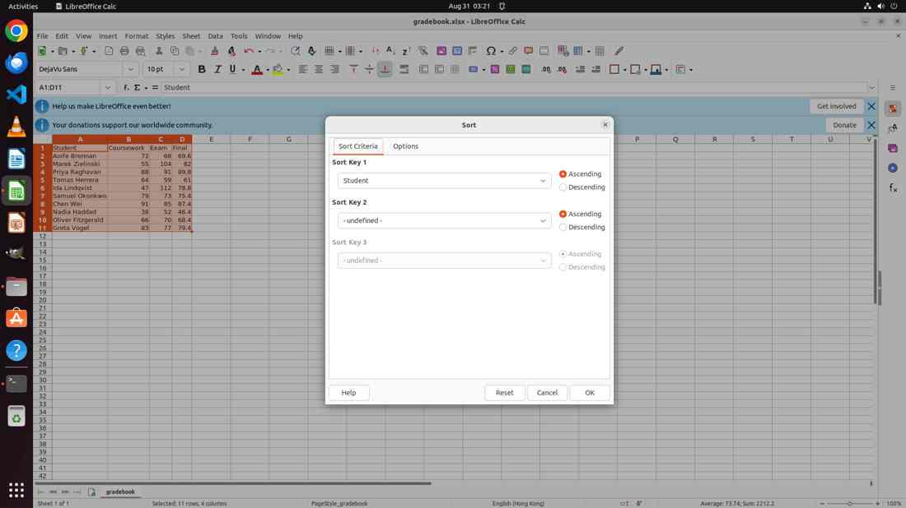
step 42 12:21:14
THINKINGThe Sort dialog is open. Sort Key 1 dropdown currently shows "Student" and "Ascending" is selected. I need to change Sort Key 1 to "Final" and keep Ascending (worst/lowest first). Let me click the Sort Key 1 dropdown and select "Final".
The "Range contains column labels" option is in the Options tab — since the dropdown shows the header names (Student, Coursework, Exam, Final), it correctly detected headers. Good.
Let me click the Sort Key 1 dropdown.
ACTIONThe Sort dialog detected the header labels. I'll set Sort Key 1 to "Final" (Ascending keeps the lowest/worst first). Let me open the Sort Key 1 dropdown.
EXECUTED (pyautogui in VM)pyautogui.click(1151, 380)
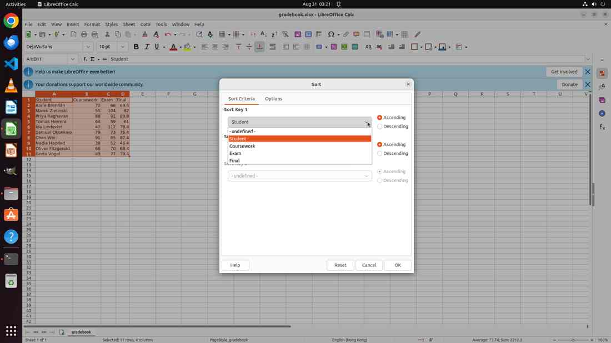
step 43 12:21:26
THINKINGThe dropdown shows: - undefined -, Student, Coursework, Exam, Final. I'll click "Final" at (495, 333). Then Ascending is already selected for Sort Key 1. Then click OK.
EXECUTED (pyautogui in VM)pyautogui.click(1245, 832)
step 45 12:22:02
THINKINGThe sort worked. The order is now:
1. Nadia Haddad, 38, 52, 46.4
2. Tomas Herrera, 64, 59, 61
3. Oliver Fitzgerald, 66, 70, 68.4
4. Aoié Brennan, 72, 68, 69.6
5. Samuel Okonkwo, 79, 73, 75.4
6. Ida Lindqvist, 47, 112, 78.8
7. Greta Vogel, 83, 77, 79.4
8. Marek Zieliński, 55, 104, 82
9. Chen Wei, 91, 85, 87.4
10. Priya Raghavan, 88, 91, 89.8
This exactly matches my expected sorted order. The rows moved together correctly (Coursework and Exam followed their students). Note the exam values 112 and 104 remain in the Exam column (raw data preserved), but the Final used the capped value. That's correct per the rule — the rule says cap before weighting, not to alter the recorded exam. The Final column holds the recomputed value.
Everything is correct. Now I need to save the file in xlsx format. Ctrl+S will prompt "Keep Current Format" dialog since it's xlsx. I'll press Ctrl+S then click "Use Excel 2007-365!" (Keep Current Format).
Let me save.
ACTIONThe sort is correct — students are now ordered worst mark first (Nadia 46.4 → Priya 89.8), with Coursework/Exam following each student. Now I'll save the file with Ctrl+S, keeping the xlsx format.